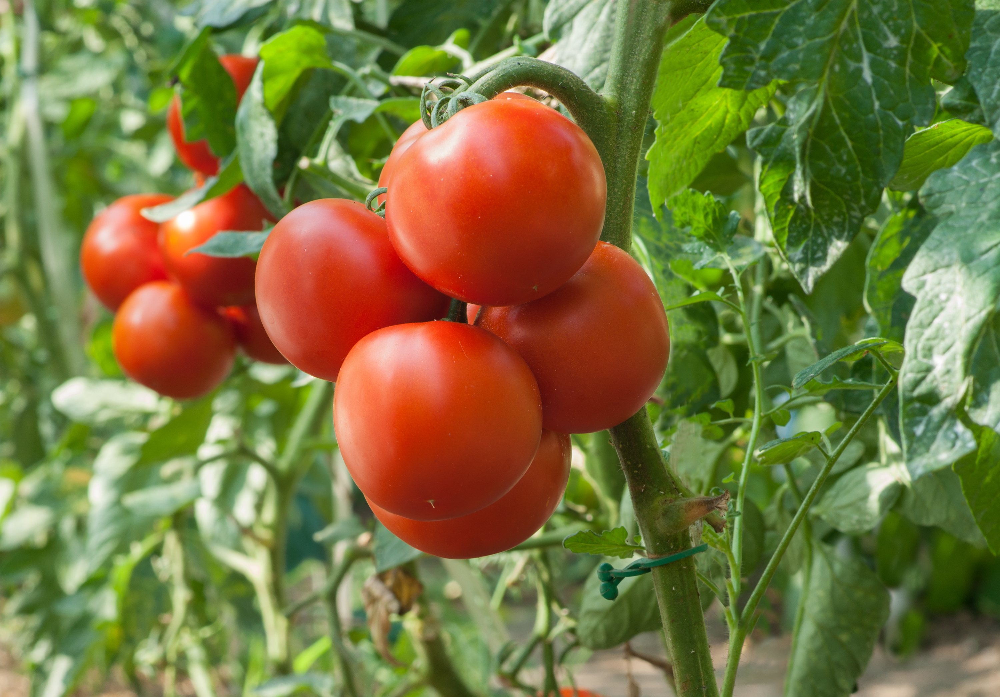
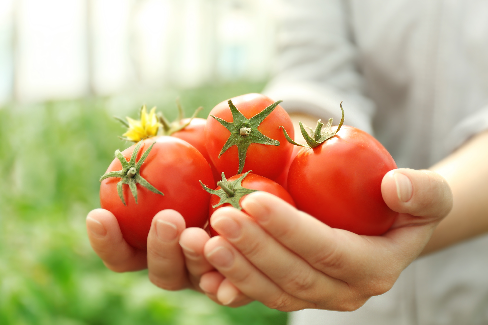
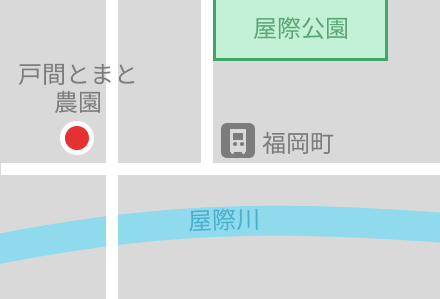

一口かじれば、
口いっぱいに広がるおいしさ。
戸間とまと農園では、こだわりの有機栽培で
旨味をぎゅっと凝縮させた自慢のトマトを育てています。
戸間とまと農園では、こだわりの有機栽培で
旨味をぎゅっと凝縮させた自慢のトマトを育てています。



私たちはここ福岡の地で代々バトンを繋ぎながら、約50年にわたりトマトと向き合ってきました。
目指しているのはうま味のぎゅっと詰まった特別なトマトです。
50年間変わらない情熱と、進化し続けるこだわりの味を、ぜひ皆様の食卓でお楽しみください。

〒000-1234
福岡県福岡市福岡町1234-5

| 屋号 | 戸間とまと農園 |
|---|---|
| 住所 | 〒000-1234 福岡県福岡市福岡町1234-5 |
| TEL | 123-4567-8910 |
| FAX | 109-8765-4321 |
| 営業時間 | 9:00〜17:00（定休日：水曜日） |